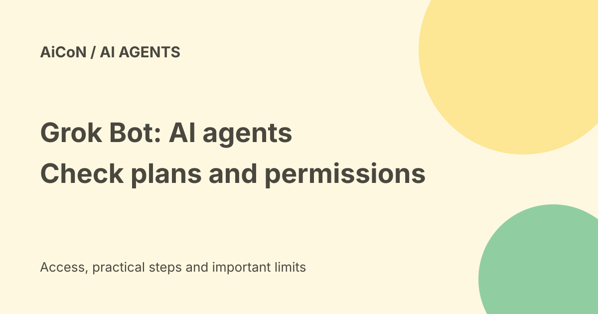

Grok Bot: paid AI agents, shared cloud access and approval limits
Grok Bot gives users persistent AI agents that can work across connected apps and websites. Current docs list desktop and mobile platforms beyond the original Mac/iOS launch. It needs eligible paid access, runs work in the cloud and requires careful control of accounts and approvals.

What does Grok Bot do?
The official docs describe named Bots with jobs and persistent context. They can research, draft documents, browse and use connected tools. Work continues on a cloud computer when the user's laptop is closed. The desktop and phone apps are interfaces for giving work, checking results and handling approvals.
Examples include researching sales prospects, drafting outreach and working with files. These are described capabilities, not workflows we tested. A Bot still depends on a site's access rules, available connectors and the accounts you connect.
Current devices and access
| Desktop | macOS, Windows and Linux, with supported architectures listed in the docs. |
|---|---|
| Mobile | iPhone, iPad and Android. |
| Individual access | Included with paid individual Cursor plans, or a linked individual SuperGrok, Plus or Heavy subscription. |
| Teams | Cursor Teams access follows its plan and seat allowance. |
| Enterprise | Current product page describes general availability; setup and terms need the organisation's account team. |
The launch announcement had a narrower desktop/iOS scope and an enterprise waitlist. Use current docs for today's platform list. An Indian account's eligibility, download route and billing were not tested here.
Usage and billing
The FAQ says subscriptions include weekly usage. Eligible accounts can add on-demand usage billed from model and token costs. If linked Cursor and SuperGrok subscriptions both exist, the FAQ says Grok Bot uses whichever has more usage. Do not assume that means two unlimited pools are added together.
Review included usage, on-demand settings and account-level spending controls. Enterprise pricing and allowances need account-specific confirmation. We did not verify a universal rupee price or a current two-week free enterprise offer. The archived trial wording is not a reason to turn on a billing-enabled plan.
Bots share access within your account
The docs say all of your Bots share one account cloud computer, including files, browser sessions and app logins. They have separate conversations, but placing a file or session on that computer can make it available to other Bots you run. Do not mistake separate names for separate access boundaries.
Between users, the vendor describes isolation. That is different from your own Bots being isolated from one another. Connect only the accounts needed and use separate permitted test data before bringing in confidential work.
Privacy and action approval
The FAQ says Grok Bot uses Cursor authentication and account data settings, requires cloud storage and does not support Legacy Privacy Mode. Training opt-out follows applicable settings. A local app does not make the work local-only.
Auto Review can stop sensitive actions for approval, but current docs say behaviour depends on the tool, risk and review rules. Enterprise enforcement is a separate setting. Read the exact controls before relying on them. Draft-only and read-only tasks are a safer first test than purchases, publishing or deletion.
Passwords, two-factor challenges and other human-only steps may require the user to take over. A website can block automation or require a manual step; do not use an agent to evade those limits.
What was the 400,000-user report?
Bloomberg's 22 September report said the product had more than 400,000 weekly users roughly a month after launch. It cited a presentation and people familiar with it. This is a dated reported usage measure, not 400,000 new registrations verified today and not proof that the service is suitable for your work.
A careful first task
- Check current plan access, weekly usage and on-demand billing.
- Create a Bot with one narrow job and a clear finish line.
- Connect only necessary read access, using non-sensitive sample work.
- Ask for a draft and compare its facts with the original sources.
- Inspect approval rules before allowing writes, sends or money actions.
- Review account sessions and remove access that is no longer needed.
We did not subscribe, install an app, connect accounts or run a Bot. No approval or privacy control was tested hands-on.
Frequently asked questions
Is Grok Bot free for everyone?
No. Current docs require eligible paid access.
Do Bots each have private app logins?
Your Bots share the account's cloud computer and sessions.
Will every action ask first?
Do not assume so. Check the tool and enabled review settings.
What changed since the earlier post?
This guide adds current Windows, Linux and Android support, weekly usage and possible on-demand charges. It replaces the old enterprise-trial assumption with current account terms, explains shared access and labels the adoption figure as weekly users reported in September.
Sources: Current overview · Current FAQ · Teams and enterprise controls · Current product page · Bloomberg weekly-user report. Checked 8 October 2026.